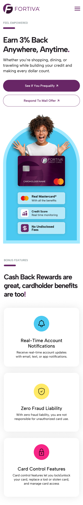
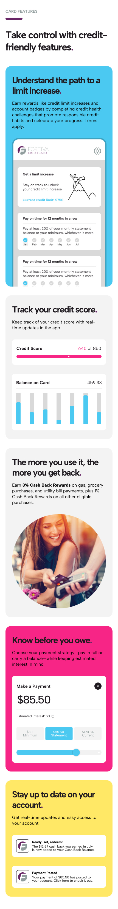
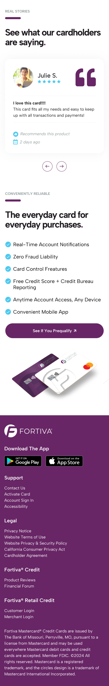

Fortiva Mastercard
Conversion-focused redesign that turned a brand-forward credit card page into a clearer, more action-oriented application experience

Project Overview
Fortiva Mastercard is built for consumers rebuilding credit, a user group that tends to be cautious, skeptical, and quick to leave when value or eligibility feels unclear. I redesigned the landing page to communicate the offer faster, reduce friction in the decision-making process, and guide users into the application flow with more confidence across desktop and mobile.
This case study reframes the work the way strong fintech and growth-focused portfolios do: clear business problem, sharper design reasoning, and a direct comparison between the original experience and the redesigned one. Rather than simply modernizing the interface, the redesign focused on improving hierarchy, trust, scanability, and conversion intent.
01The Challenge
The original landing page looked polished, but it did not help users make a fast decision.
The hero leaned on a broad lifestyle message, Designed for the way you live., which created tone but did not clearly explain the product’s value. Users still had to figure out what they were getting, whether the card was right for them, and why they should act now.
Important details such as rewards, application simplicity, and trust-building information were present, but they were spread across centered copy blocks and secondary sections. The experience felt more like a brand presentation than a decision tool.
Key Challenges
- Turn a polished but passive page into a clearer, more guided acquisition experience.
- Surface value and trust earlier for users who are cautious about applying.
- Reduce cognitive load by replacing dense, centered content with faster-scanning modules.
- Create stronger urgency and momentum without making the page feel aggressive.
- Improve the mobile experience for an audience likely to discover and evaluate the offer on smaller screens.
UX Goals
- Communicate value within the first few seconds of landing on the page.
- Make the primary and secondary paths immediately clear.
- Structure each section around a specific user question or hesitation.
- Use clearer hierarchy, spacing, and repetition to improve scanability.
- Create a more confident mobile-first experience without losing brand presence.
02Strategic Repositioning
The redesign shifts the experience from passive browsing to active decision-making.
In the original version, the page introduced the brand and product with a calm, polished tone, but it answered users’ most important questions too slowly. My version reorganized the experience around momentum, scanability, and action.
The goal was not just to make the interface feel more modern. It was to move the page from Here is who we are to Here is why you should apply while keeping the experience clear, trustworthy, and easy to move through on any screen size.
03Why the new version performs better
Comparing the original and redesigned experiences made the biggest improvement clear: the old page created interest, while the new page creates action.
Original version
- Strong visual polish, but softer urgency.
- Lifestyle-led messaging before product clarity.
- Large centered content blocks that slowed scanning.
- Less obvious progression from interest to application.
Redesigned version
- Clearer hierarchy from the first screen.
- Stronger CTA visibility and more obvious next steps.
- Section-based content structure that answers user questions faster.
- Better reinforcement of trust, benefits, and ease of application.
04Design Approach
I narrowed the redesign to a set of deliberate shifts that would make the value easier to understand, the page easier to scan, and the next step easier to take.
Hero Reframing: From vague to actionable
The original hero created mood, but it did not create direction. The lifestyle headline sounded polished, yet it left too much interpretation up to the user.
In the redesign, I focused the hero on readability, stronger call-to-action visibility, and a clearer sense of momentum. The layout now gives users two obvious paths, reinforces the product visually, and immediately feels more useful as a decision-making surface.
Content Hierarchy: From stacked information to guided progression
The original page stacked information in a way that looked clean, but it did not create enough forward pull. Important value points were separated by large blocks of centered copy and repeated layouts that slowed scanning.
I restructured the page so each section answers a specific user question. That created a clearer flow from value, to reassurance, to everyday relevance, to trust. The result feels more intentional and easier to process at a glance.
Trust & transparency built into the flow
For users rebuilding credit, trust is not a secondary layer. It is part of the conversion strategy. In the redesign, reassurance is introduced earlier through clearer benefit framing, better CTA context, stronger social proof placement, and more visible signals that the process is manageable. Rather than making users hunt for confidence, the page now builds it section by section.
Typography, spacing, and visual rhythm
A big part of the improvement came from tightening the page’s visual rhythm. Larger type, stronger heading contrast, and more deliberate spacing make each section easier to read and easier to differentiate.
Color was also used more intentionally. Rather than letting everything compete evenly, the design uses the brand palette to direct attention toward interaction points and support clearer hierarchy without losing Fortiva’s visual identity.
Mobile-first execution
The new layout was designed to hold its hierarchy on smaller screens, not just shrink into them. Content stacks cleanly, sections stay distinct, and calls to action remain easy to spot and easy to reach. That matters for a product like this, where many users are likely evaluating the offer quickly on mobile and deciding whether it feels trustworthy enough to continue.



05The Process
Once the problem was clear, the process became less about adding more content and more about deciding what users needed to understand first, second, and third.
I approached the redesign like a guided acquisition funnel, where each section had to earn its place by either clarifying value, reducing hesitation, or moving users closer to action.
1. Reframe the first impression
I started by identifying the gap between the original first impression and the user’s real decision criteria. The old page looked credible, but it did not explain the value quickly enough. The redesign shifts the top of the page toward clarity, stronger intent paths, and a more obvious reason to keep going.
2. Turn features into scannable value
Instead of presenting features as long-form explanation, I grouped them into clearer, more digestible modules. This made the content feel lighter while still communicating meaningful benefits like everyday usability, account visibility, and progress tracking.
3. Introduce reassurance at the right moment
Social proof became more effective once the page had already established what the product offers. Rather than feeling tacked on, testimonials now work as reinforcement at a point where users are still deciding whether the offer feels legitimate and worth the next step.
4. Repeat action without adding pressure
I kept calls to action visually consistent and repeated them at natural decision points throughout the page. That helped the experience feel predictable and easy to act on without becoming pushy or visually noisy.
5. Support multiple user intents
Not every visitor lands in the same mindset. Some users want to prequalify immediately. Others are responding to an offer they already received. Mapping those paths early helped the page support both behaviors while still keeping the main action visible and prioritized.

06Final Outcome
The redesign transformed the experience from a brand-forward information page into a more focused conversion funnel.
Users no longer had to interpret the offer on their own. The page now introduces value earlier, builds confidence faster, and makes the next step more obvious throughout the experience.
- Average time on page increased by 15 percent, showing stronger content engagement.
- Bounce rate decreased by 12 percent, suggesting clearer value communication and better information hierarchy.
- Conversion rate increased by 20 percent, driven by a more focused page structure, stronger CTA placement, and less friction in the decision to apply.
More importantly, the redesign proves that small structural and messaging decisions can have a major effect on performance. This was not just a visual refresh. It was a clearer strategy for helping users understand the offer and feel ready to act.
Full Page View


{kind=link}
{kind=link}
{kind=link}
{kind=link}